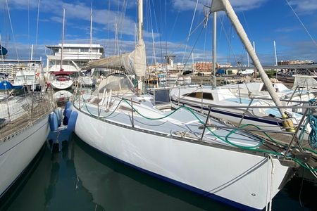

<div style="max-height: 600px; overflow-y: scroll;">
    <div style="display: grid; grid-template-columns: auto auto;">
        
        <div style="padding: 14px;">
            <h2>Tokad 2</h2>
            Neptune 99
        </div>
    </div>
    <div>
        <h2>Le Bateau</h2>
        <ul>
            <li>D&eacute;riveur</li>
            <li>Ann&eacute;e 1981</li>
            <li>Longeur 9,55</li>
            <li>Largeur 3,25</li>
            <li>Tirant d'eau 0,80/ 2m</li>
            <li>Moteur Volvo 20cv Diesel</li>
            <li>Bateau bas&eacute; au Crouesty</li>
        </ul>
    </div>
    <div>
        <h2>Plus d'infos...</h2>
        R&eacute;f&eacute;rent : bmenuet@wanadoo.fr
    </div>
</div>